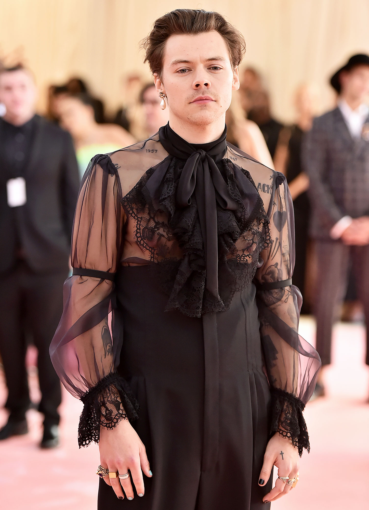

« Ce qui est vraiment excitant, dit Styles dans la fonction qui l’accompagne, c’est que toutes ces lignes (de genre) s’effondrent. C’est comme n’importe quoi – chaque fois que vous mettez des barrières dans votre propre vie, vous vous limitez ». Bien que le musicien soit maintenant bien connu pour confronter les idées traditionnelles entourant la mode sexospécifique – après avoir travaillé en étroite collaboration avec Alessandro Michele de Gucci et adopté des blouses à arc-chatte et des colliers de perles sur le tapis rouge – sa couverture Vogue a néanmoins rétabli le discours autour des vêtements et de la masculinité à travers les flux des réseaux sociaux partout dans le monde.
